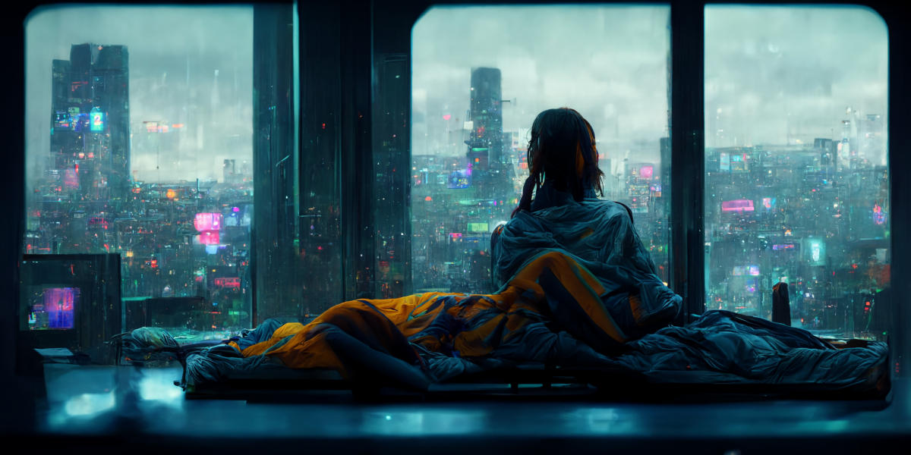
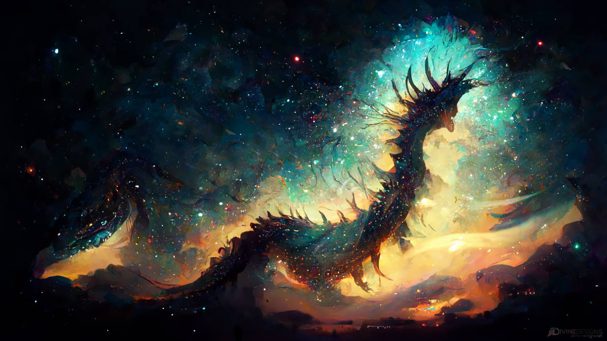
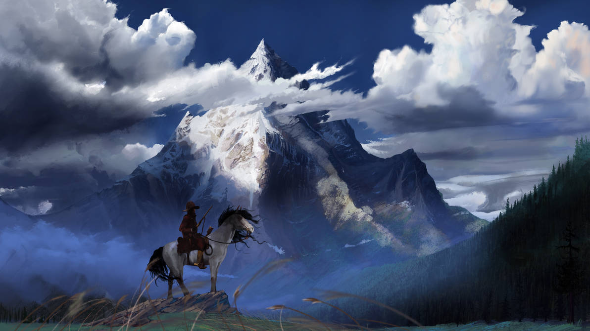
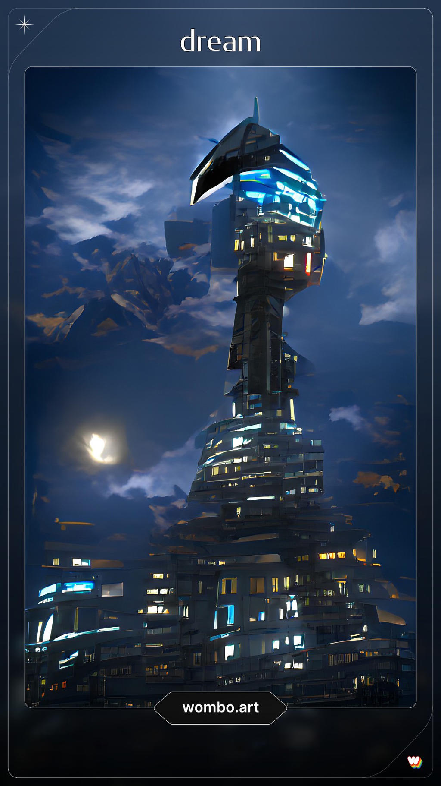

Tentang AI Art
Seni Kecerdasan Buatan (atau A.I. Art) adalah sebuah gambar seni yang dibuat melalui teknologi kecerdasan buatan (artificial intelligence), berdasarkan prompt / kata kunci yang dimasukkan pengguna
Di tahun 2022 ini kemajuan teknologi AI telah berkembang pesat, bahkan salah satunya di bidang seni. Saat ini AI dapat menciptakan sebuah karya seni yang kualitasnya sangat tinggi, bahkan bisa dibandingkan dengan seni yang dibuat oleh seorang manusia.
Berikut beberapa seni yang diciptakan oleh AI.

Mid Journey

Midjourney is a research lab and the name of the lab's artificial intelligence program that creates images from textual descriptions, similar to OpenAI's DALL-E. The tool is currently in open beta. The program was used by the British magazine The Economist to create the front cover for an issue in June 2022. In Italy, the leading newspaper "Corriere della sera" published a comic created with Midjourney by writer Vanni Santoni in August 2022. The Midjourney team is led by David Holz, who co-founded Leap Motion. (dari Wikipedia)
Currated Arts:
Dall-E

DALL-E (stylized as DALL·E) and DALL-E 2 are machine learning models developed by OpenAI to generate digital images from natural language descriptions. DALL-E was revealed by OpenAI in a blog post in January 2021, and uses a version of GPT-3 modified to generate images. In April 2022, OpenAI announced DALL-E 2, a successor designed to generate more realistic images at higher resolutions that "can combine concepts, attributes, and styles".
OpenAI has not released source code for either model, although output from a limited selection of sample prompts is available on OpenAI's website. As of 20 July 2022, DALL-E 2 entered into a beta phase with invitations sent to 1 million waitlisted individuals Access was previously restricted to pre-selected users for a research preview due to concerns about ethics and safety. Despite this, several open-source imitations trained on smaller amounts of data were released by others. (dari Wikipedia).
Currated Arts:
Wombo

Dream by Wombo is a free image manipulation app that uses the power of AI to create abstract art pieces based on the information provided by the user. Dream by Wombo is completely free to use with no limits. It is available on Android and iOS.
Currated Arts: